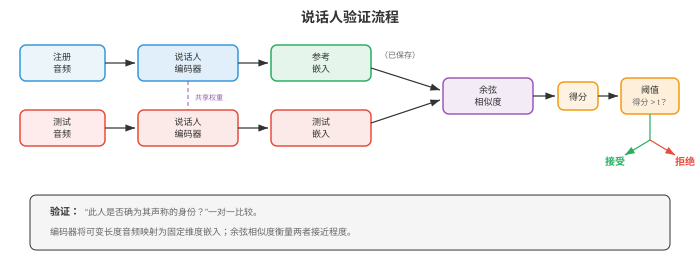
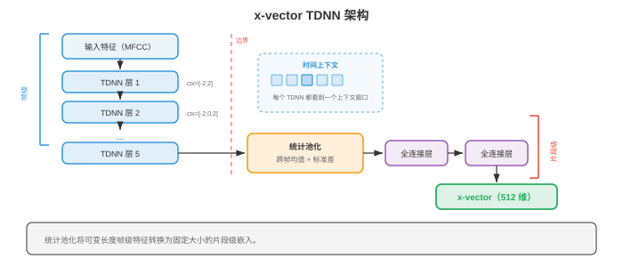
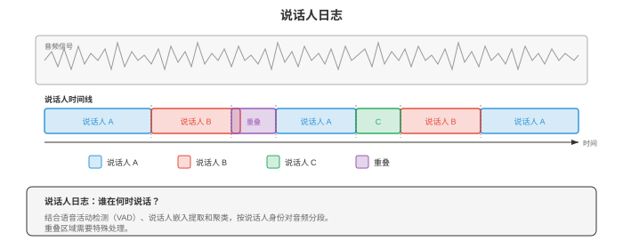
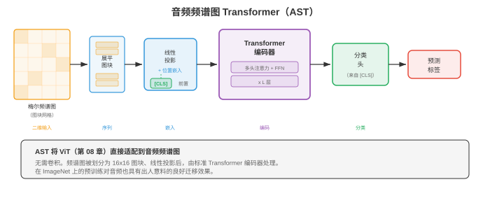

说话人和音频分析¶
说话人和音频分析用于识别谁在说话、何时说话，以及其中有哪些非语音声音。本节涵盖说话人验证与辨认、i-vector、d-vector、x-vector、说话人日志、音频事件分类、音乐信息检索和语音情感识别。
- 在第 01 节中，我们建立了信号处理基础：频谱图、MFCC 和梅尔滤波器组。在第 02 节中，我们识别了说了什么。现在要问的是谁说的、何时说的，以及音频中还发生了什么。说话人识别、说话人日志、音频分类和音乐分析有一条共同主线：学习紧凑的嵌入，使其捕获当前任务所需的不变性，这与第 06 章的嵌入思想相呼应。
大白话
这一节不关心具体说了哪句话，而是从声音里找出谁在说、什么时候说，以及环境里发生了什么。
- 识别说话人就像在电话里辨认朋友的声音。你不需要理解词语；音色、语速和发声质感中有些特征是那个人独有的。说话人识别系统学习从原始音频中提取这种“声纹”，忽略说了什么，聚焦于怎么说。
大白话
人能靠声音认出朋友，系统也要学到这种相对稳定的“谁在说”的特征，并尽量忽略说话内容。
- 说话人识别是两个相关任务的统称：
大白话
一个任务是核验“是不是这个人”，另一个任务是从候选名单里找出“到底是谁”。
-
说话人验证（speaker verification, SV）：给定一个声称的身份和一段音频，判断说话人是否确为该身份。这是二元决策（接受或拒绝），也是基于声音的身份认证（“嘿，Siri，这是我的声音吗？”）背后的技术。
大白话
说话人验证像刷脸：系统只判断这段声音是否属于你声明的那个人。
-
说话人辨认（speaker identification, SI）：给定一段音频和一组已知说话人，判断是哪位说话人产生了该音频。这是一个多类别分类问题。
大白话
说话人辨认像在通讯录里找人：它要从多名已知说话者中选出最像的一位。

- 两个任务共享同一种底层表征：固定维度的说话人嵌入，它无论说话内容为何都能捕获说话人的身份。差异只在决策阶段：验证比较两个嵌入，辨认则在候选中寻找最近的嵌入。
大白话
两种任务都先把声音压成声纹向量；一个比较两张声纹是否接近，另一个在许多声纹中找最近的。
- 余弦相似度是比较说话人嵌入的标准度量。给定注册嵌入 \(e\) 和测试嵌入 \(t\)：
大白话
余弦相似度主要比较两个声纹向量的方向是否一致，不太受向量整体大小影响。
大白话
点积大且两向量夹角小时，\(s\) 接近 1，说明两段声音更像来自同一个人。
- 阈值 \(\theta\) 决定接受/拒绝：若 \(s > \theta\)，则接受。阈值需要在误接受率（false acceptance rate, FAR）和误拒绝率（false rejection rate, FRR）之间权衡。FAR = FRR 时的等错误率（equal error rate, EER）是标准评估指标。EER 越低，性能越好。最先进系统在标准基准（VoxCeleb）上已达到低于 1% 的 EER。
大白话
门槛低了容易把陌生人放进来，门槛高了又会误拒本人；EER 用两种错误恰好一样多时的比例衡量系统平衡表现。
- i-vector（Dehak 等，2010）是深度学习之前占主导地位的说话人嵌入。其思想来自因子分析（第 02 章的矩阵分解和第 04 章的降维）。一个在多样说话人上训练的大型 GMM，即通用背景模型（universal background model, UBM），定义了超向量空间。每个话语的 GMM 超向量被投影到低维的总变异空间（total variability space）：
大白话
i-vector 先用一个大 GMM 描述各种常见声音，再把每段录音的复杂统计特征压成短向量。
大白话
这表示一段话语的特征等于平均声音 \(m\) 加上由低维向量 \(w\) 组合出的变化部分。
- 其中，\(M\) 是话语的 GMM 超向量，\(m\) 是 UBM 均值超向量，\(T\) 是总变异矩阵（从数据中学习），\(w\) 是 i-vector，即一种低维（通常为 400-600 维）表征，同时捕获说话人变异和通道变异。
大白话
i-vector 把“谁在说”和“用什么麦克风、在什么环境录”的变化一起塞进同一向量，这也是后续还要去除通道影响的原因。
- 为从 i-vector 中去除通道变异，概率线性判别分析（Probabilistic Linear Discriminant Analysis, PLDA）将 i-vector 建模为说话人特有和通道特有潜变量之和。PLDA 为验证提供了有原则的对数似然比得分：
大白话
PLDA 尝试把“这个人的嗓音”与“电话、房间、麦克风造成的变化”分开，再判断两段录音是否可能同人。
大白话
分子是假设同一人时两段声纹同时出现的可能性，分母是假设不同人时的可能性；比值越大越支持同一人。
- d-vector（Variani 等，2014）是最早的神经说话人嵌入。一个对帧级特征进行说话人分类训练的 DNN，通过平均一个话语所有帧中最后一个隐藏层的激活，提取固定维度表征。d-vector 简单而有效，证明神经网络无需 i-vector 的复杂统计机制，也能学习区分说话人的特征。
大白话
d-vector 让神经网络先学会“这段是谁说的”，再把每一帧的中间特征平均，得到整段录音的声纹。
- x-vector（Snyder 等，2018）使用时延神经网络（Time Delay Neural Network, TDNN）架构，大幅推进了神经说话人嵌入。TDNN 是在每一层采用特定上下文窗口的一维卷积；它与第 03 节 WaveNet 中的空洞卷积有关，但应用于帧级特征而不是原始波形采样。
大白话
x-vector 用 TDNN 同时看一个声音帧及其邻近帧，比只看单帧更能捕获稳定的说话习惯。

- x-vector 架构分为三个阶段：
大白话
它先逐帧提取局部特征，再把整段时间信息汇总，最后压成一条固定长度的声纹。
-
帧级层：一组 TDNN 层使用逐步扩大的时间上下文处理 MFCC（来自第 01 节）。每层都看到固定的上下文窗口（例如第一层的 \(\{t-2, t-1, t, t+1, t+2\}\)；后续层的窗口更宽）。
大白话
帧级层从小窗口开始看声音，再逐层扩大可见范围，学习局部发音变化。
-
统计池化：帧级层之后，在整个话语上计算帧级输出的均值和标准差，因而不论话语长度如何，都可得到固定维度的向量：
大白话
统计池化把长短不同的录音都压成同样长度，平均值描述典型特征，标准差描述它的变化幅度。
\[ \begin{aligned} \mu &= \frac{1}{T} \sum_{t=1}^{T} h_t \\ \sigma &= \sqrt{\frac{1}{T} \sum_{t=1}^{T} (h_t - \mu)^2} \end{aligned} \]大白话
\(\mu\) 是所有帧的平均表示，\(\sigma\) 是每个维度围绕平均值波动多大；两者拼起来就保留了更多说话习惯。
-
其中，\(h_t\) 是时刻 \(t\) 的帧级输出；拼接后的 \([\mu; \sigma]\) 就是池化表征。
大白话
平均值告诉系统“总体像什么”，标准差告诉系统“变化有多大”，两者合用比只取平均更有辨识力。
-
片段级层：全连接层处理池化表征。第一个片段级层的输出（softmax 之前）就是 x-vector 嵌入。
大白话
汇总后的信息再经过全连接层整理，分类头之前的向量就是可用于比较的 x-vector。
- x-vector 在说话人身份上使用标准交叉熵损失训练。尽管训练目标是分类，学到的中间表征（x-vector）对未见过的说话人也有良好泛化性，因为网络学习的是区分说话人的特征，而不是记忆特定说话人。
大白话
虽然训练时只认训练集里的固定人名，但网络会学出更通用的声纹规律，因此新说话者也能映射成有用向量。
- ECAPA-TDNN（Desplanques 等，2020）是当前基于 TDNN 的先进说话人识别架构。它在 x-vector 之上引入三项改进：
大白话
ECAPA-TDNN 在 x-vector 的基础上，让模型更会挑重要特征、同时看多个时间尺度，并给更有辨识度的声音帧更高权重。
-
压缩激励（Squeeze-Excitation, SE）模块：一种通道注意力机制（来自第 08 章的 SENet），根据全局上下文重新加权特征通道，使模型强调与说话人相关的通道。
大白话
SE 模块会根据整段录音判断哪些特征通道更能区分人声，再把它们的影响调大。
-
Res2Net 风格多尺度特征：每个 TDNN 块内的通道被分为多个组并分层处理，从而形成多个时间分辨率的特征（类似第 08 章的多尺度特征提取）。
大白话
多尺度特征让模型既看很短的发音细节，也看较长的说话节奏，不把所有时间变化混成一种尺度。
-
注意力统计池化：不再做等权平均，而由注意力机制为每个帧对池化统计量的贡献赋权。含有更多说话人区分信息的帧（例如携带更多说话人信息的元音）获得更高的注意力权重：
大白话
并非每个声音帧都一样有用；注意力池化会让更能暴露声纹的部分在最终向量里占更大比重。
大白话
这条 softmax 公式把每一帧的打分变成总和为 1 的权重，分高的帧会被重点汇总。
- 其中，\(f\) 是一个小型神经网络，\(v\) 是学习得到的注意力向量。注意力加权后的均值和标准差分别为 \(\tilde{\mu} = \sum_t \alpha_t h_t\) 和 \(\tilde{\sigma} = \sqrt{\sum_t \alpha_t (h_t - \tilde{\mu})^2}\)。
大白话
加权平均和加权标准差会优先反映重要帧，而不是让静音或噪声帧和清晰人声帧一票同权。
- ECAPA-TDNN 通常使用 AAM-Softmax（Additive Angular Margin Softmax，加性角度间隔 Softmax）训练。它在分类损失中加入角度间隔惩罚，使同一说话人的嵌入在超球面上更接近，不同说话人的嵌入更远离：
大白话
AAM-Softmax 强迫不同说话者的声纹之间留出更明显的角度间隔，让验证时更不容易混淆。
大白话
对正确类别额外加上间隔 \(m\) 后，模型必须把它拉得更近才能拿高分，于是类间边界会更清楚。
- 其中，\(\theta_{y_i}\) 是嵌入与真实类别权重向量的夹角，\(m\) 是间隔（通常为 0.2），\(s\) 是缩放因子（通常为 30）。这个损失来自人脸识别（第 08 章的 ArcFace），对说话人验证非常有效。
大白话
\(m\) 是故意提高的及格线，\(s\) 用来调节分数尺度；人脸和声纹本质上都在做“同类聚紧、异类分开”。
- 说话人日志（speaker diarisation）在多说话人录音中回答“谁在何时说话”。可以把它看作给时间线着色：每种颜色表示一个说话人，系统必须确定每位说话人何时活跃，包括重叠语音。
大白话
说话人日志不是识别名字本身，而是在录音时间线上标出每一段是谁在说，连两人同时说话也要标出来。

- 基于聚类的说话人日志是传统的流水线方法：
大白话
传统做法先把录音切短片、给每片提声纹，再把相似片段归成同一个说话者，最后修正切分边界。
-
分段：使用滑动窗口或说话人变化检测，将音频划分为短片段（通常为 1-2 秒）。
大白话
先把长录音切成一两秒的小段，方便后续逐段判断声纹。
-
嵌入提取：为每个片段提取说话人嵌入（x-vector、ECAPA-TDNN）。
大白话
每个小段都被压成一条声纹向量，作为分组依据。
-
聚类：按说话人对片段分组。凝聚层次聚类（Agglomerative Hierarchical Clustering, AHC）是标准做法：先将每个片段视为独立簇，再迭代合并最相似的两个簇，直至满足停止条件（由距离阈值或目标说话人数决定）。
大白话
AHC 一开始把每段都当成不同人，再不断把最像的两组并起来，直到不像的组不该再合并。
-
重新分段：使用基于 Viterbi 的重新对齐细化边界。
大白话
最后再沿时间轴细调交接点，让说话人切换的边界更贴近真实位置。
- 通常无法预先知道说话人数，这使问题比标准聚类更困难。使用基于特征值的阈值确定 \(k\) 的谱聚类，也是另一种常见方法。
大白话
真实会议经常不知道到底几个人说过话，连该分成几组都是要从数据里估计的难题。
- 端到端神经说话人日志（end-to-end neural diarisation, EEND；Fujita 等，2019）将说话人日志表述为多标签分类问题。神经网络（通常是基于自注意力的模型，即第 07 章的 Transformer）将整段录音作为输入，并为每位说话人、每个帧输出二元活动标签。这可以直接处理重叠语音，而重叠语音正是基于聚类方法的主要弱点。
大白话
EEND 直接在每个时间点回答每个人是否在说话，不必先切段再聚类，因此两人重叠说话也能同时标为活跃。
- 对于 \(S\) 位说话人在帧 \(t\) 上的情况，EEND 的输出为：
大白话
对每一帧、每一个输出说话者槽位，模型都给一个 0 到 1 的“正在说话”概率。
大白话
经过 sigmoid 后，每个槽位独立给概率，所以同一帧可以有多位说话者同时为 1。
- 其中，\(h_t\) 是帧 \(t\) 的 Transformer 输出，\(f_s\) 是说话人 \(s\) 的线性投影。训练损失为跨说话人和帧求和的二元交叉熵。一个关键难点是说话人数必须固定，或由可变输出架构处理（EEND-EDA 使用带吸引子的编码器-解码器）。
大白话
普通 EEND 得先预留固定数量的说话者输出位；人数不固定时，还要让模型自己决定需要多少个槽位。
- 说话人日志中的置换不变训练（permutation invariant training, PIT）处理标签歧义问题：说话人没有固有顺序，因此会对所有可能的“说话人到输出”分配计算损失，并取最小值（这与第 05 节源分离中使用的 PIT 相同）。
大白话
输出槽位 1、2 没有天然对应“张三、李四”；PIT 会试遍对应关系，只按最合理的匹配来算错。
- 音频分类为整段音频分配一个标签。不同于转写语音的 ASR（第 02 节），音频分类覆盖范围更广：环境声（警笛、雨声、狗叫）、音乐流派（摇滚、爵士、古典）以及一般音频事件。
大白话
音频分类不是把声音写成文字，而是给整段声音贴标签，例如下雨、警报、爵士乐或狗叫。
- 标准方法沿用第 08 章的图像分类范式：将音频表示为频谱图（一张二维时频图像），再应用 CNN 或 Transformer 分类器。这种频谱图像方法借助了计算机视觉数十年的进展。
大白话
把声音画成频谱图后，许多看图找模式的方法就能直接拿来识别声音类别。
- 环境声音分类（environmental sound classification, ESC）使用 ESC-50（50 类、2,000 个片段）和 UrbanSound8K 等数据集。典型架构是在对数梅尔频谱图上应用 CNN（第 06 章）。数据增强至关重要：时间拉伸、音高平移、添加背景噪声和 SpecAugment（第 02 节应用于频谱图的掩蔽方法）都能提升泛化能力。
大白话
环境声样本通常不多，训练时把声音拉长、变调、加噪，能让模型不只记住训练录音本身。
- 音频事件检测（Sound Event Detection, SED）是分类在时间维度上的对应问题：不仅要判断有哪些事件，还要判断它们何时开始和结束。AudioSet（Gemmeke 等，2017）是大规模基准，包含 527 个事件类别和超过 200 万个来自 YouTube 的 10 秒片段，每个片段都只有弱标签（片段级标签，而非帧级标签）。
大白话
SED 比分类多问一步：不只要说“有警报”，还要指出警报是在第几秒开始、什么时候结束。
- 弱监督 SED必须从片段级标签学习帧级预测。标准方法用 CNN 生成帧级类别概率，再通过注意力池化聚合为片段级预测：
大白话
训练数据只说十秒里出现过什么，没有标具体时刻；模型得先猜每帧，再把这些猜测汇总成整段标签。
大白话
注意力权重让模型把更像事件发生时刻的帧看得更重，再得到该事件在整段中是否出现的判断。
- 其中，\(f_{t,c}\) 是类别 \(c\) 在时刻 \(t\) 的帧级 logit，\(\alpha_{t,c}\) 是注意力权重。片段级预测 \(\hat{Y}_c\) 与片段级标签进行训练。
大白话
虽然训练只给整段答案，注意力仍会慢慢学会把权重放到真正相关的时刻上。
- 声学场景分类（acoustic scene classification, ASC）对整体环境分类，例如“机场”“公园”“地铁站”“办公室”。这是一项整体性任务：模型必须捕获一般声学纹理，而非特定事件。DCASE 挑战赛每年评测 ASC，获胜系统通常在多分辨率频谱图上使用 CNN 集成。
大白话
场景分类看的是整段声音的背景气质，例如地铁的持续轰鸣和广播，而不是只找某一次短促事件。
- 音频嵌入是从大规模音频数据中学习出的通用表征，类似可迁移到下游任务的词嵌入（第 07 章）或图像特征（第 08 章）。
大白话
音频嵌入是通用的声音摘要向量，先在大量音频上学好，之后可以少量训练就迁移到不同任务。
- VGGish（Hershey 等，2017）将 VGG 图像分类网络（第 08 章）改造用于音频。它用在 AudioSet 上预训练的类 VGG CNN 处理 0.96 秒的对数梅尔频谱图片段，为每个片段产生 128 维嵌入。VGGish 嵌入可作为下游任务的通用音频特征，如同 ImageNet 预训练 CNN 提供视觉特征。
大白话
VGGish 把不到一秒的声音变成 128 个数字，像图像领域的通用特征提取器一样，后续任务可直接复用。
- PANNs（Pre-trained Audio Neural Networks，Kong 等，2020）是一组在完整 AudioSet 上为音频标注训练的 CNN 架构（CNN6、CNN10、CNN14）。最广泛使用的 CNN14 是一个 14 层 CNN，在对数梅尔频谱图上应用 \(3 \times 3\) 卷积。PANNs 产生 2048 维嵌入，在多样音频任务上实现先进的迁移学习效果。
大白话
PANNs 用更大规模的音频标签预训练，输出更丰富的通用表示，适合再迁移到各种声音任务。
- 音频频谱图 Transformer（Audio Spectrogram Transformer, AST；Gong 等，2021）将视觉 Transformer（Vision Transformer, ViT；第 08 章）架构直接应用于音频频谱图。频谱图被划分为 \(16 \times 16\) 图块（正如 ViT 划分图像），每个图块被展平并线性投影为 token 嵌入，随后加入位置嵌入，标准 Transformer 编码器（第 07 章）处理这个序列。使用 [CLS] token 的输出来分类。
大白话
AST 把频谱图切成小方块，当作一串视觉 token 交给 Transformer，让它学习不同时间和频率区域之间的关系。

- AST 受益于ImageNet 预训练：由于频谱图是二维图像，AST 先由在 ImageNet 图像上预训练的 ViT 初始化，再在音频上微调。这种跨模态迁移出乎意料地有效，因为两个领域共享低层特征（边缘、纹理），且位置嵌入可通过插值适配不同的频谱图尺寸。
大白话
虽然照片和频谱图含义不同，但低层的边缘和纹理规律有共通处，因此看图预训练的模型能给音频任务一个好起点。
- HTS-AT（Chen 等，2022）使用层次化 Swin Transformer 架构（第 08 章的移位窗口注意力）改进 AST，以多尺度特征提取提高性能，同时降低计算成本。
大白话
HTS-AT 先在小窗口里算注意力，再逐层扩大范围，既看多尺度模式，也比全局注意力省计算。
- BEATs（Chen 等，2023）采用面向音频的预训练策略：以离散分词器进行迭代掩蔽预测（类似第 02 节 wav2vec 2.0 的方法，但应用于通用音频）。分词器被逐步细化，生成语义意义不断增强的离散音频 token。
大白话
BEATs 让模型反复猜被遮住的音频 token，并逐步改进 token 的定义，最后学出更有语义的通用声音表示。
- 带嵌入的说话人日志将说话人嵌入与时间建模相结合。Pyannote.audio 等现代系统采用三阶段流水线：(1) 检测说话人轮次和重叠语音的神经分段模型；(2) 对每个检测到的片段应用的嵌入提取阶段（ECAPA-TDNN）；(3) 跨整段录音分配说话人身份的聚类。
大白话
现代日志系统先找哪里有人说、哪里重叠，再提声纹，最后把同一人的片段连起来，三步各做自己擅长的事。
- 音乐信息检索（music information retrieval, MIR）将音频分析应用于音乐。第 01 节的频谱表征在这里尤其有用，因为音乐具有丰富的谐波结构。
大白话
MIR 是用算法理解音乐里的节拍、和弦、乐器和风格；频谱图能把这些丰富的谐波结构显示出来。
- 节拍跟踪检测音乐的节奏脉冲。标准方法先从频谱图计算起始强度包络（检测表示音符起始的能量上升），然后使用自相关或速度谱寻找速度，最后通过动态规划跟踪各个节拍位置，找出既最符合起始包络又保持稳定速度的节拍时间序列。
大白话
节拍跟踪先找可能的“咚点”，再找稳定的速度，最后选出一条既跟得上强拍又不乱跳的节奏线。
- 和弦识别识别随时间变化的和声内容。输入通常是色度图（chromagram，也称音高类别轮廓）：将所有八度折叠在一起的 12 维表征，展示 12 个音高类别（C、C#、D、...、B）中各自的能量。CNN 或 RNN（第 06 章）将每个时间帧分类为标准和弦标签之一（C 大三和弦、A 小三和弦、G7 等）。
大白话
色度图不管音有多高或多低，只看属于哪一个音名；这样不同八度的同类音能合在一起判断和弦。
- 色度图由 STFT（第 01 节）计算得来：将每个频率 bin 映射到其音高类别：
大白话
做法是把频谱中的频率能量按十二个音名归桶，同名但不同八度的能量加在一起。
大白话
公式用模 12 把相差一个或多个八度的频率归为同一类，再累加它们的能量。
- 其中，\(p \in \{0, 1, \ldots, 11\}\) 是音高类别，\(\text{pitch}(k)\) 将频率 bin \(k\) 映射为其 MIDI 音符编号。
大白话
\(p\) 只有 12 种取值，对应一组八度循环内的十二个音名。
- 源分离基础（在第 05 节进一步详述）将一段音乐录音分离为各个乐器声部（人声、鼓、贝斯、其他）。这是混音、卡拉 OK 和音乐转录等 MIR 应用的核心。Demucs 等模型（第 05 节）在标准 MUSDB18 基准上实现了出色的分离质量。
大白话
源分离就是从一首混好的歌里尽量拆出人声、鼓和其他乐器，是卡拉 OK 去人声等功能的基础。
- 音乐标注为歌曲分配标签（流派、情绪、乐器、年代）。它本质上是应用于音乐的音频分类，使用同样的“频谱图上的 CNN”方法。Million Song Dataset 和 MagnaTagATune 是标准基准。
大白话
音乐标注就是给歌贴上流派、情绪、乐器等标签，技术上仍是对频谱图做分类。
- 音频指纹可从短片段中识别特定录音，即使存在噪声、混响或压缩伪影。经典系统是 Shazam，它对星座点（频谱图中的显著峰值）做哈希。神经方法学习对声学退化不变、同时能区分不同录音的鲁棒嵌入，这与第 06 章和第 08 章的不变特征学习相呼应。
大白话
音频指纹像歌曲的可检索条码：录音被噪声或压缩弄脏后，仍要保留足够稳定的特征来认出原曲。
编程任务（使用 CoLab 或笔记本）¶
- 任务 1：使用统计池化提取说话人嵌入。 构建一个简单的 x-vector 风格模型，让其经由 TDNN 层和统计池化处理帧级特征，生成说话人嵌入。
import jax
import jax.numpy as jnp
import jax.random as jr
import matplotlib.pyplot as plt
# Simulate frame-level MFCC features for multiple speakers
def generate_speaker_data(key, n_speakers=5, utterances_per_speaker=20,
n_frames=100, n_features=40):
"""Generate synthetic speaker data with speaker-dependent patterns."""
keys = jr.split(key, 3)
all_features = []
all_labels = []
# Each speaker has a characteristic spectral pattern
speaker_patterns = jr.normal(keys[0], (n_speakers, n_features)) * 0.5
for spk in range(n_speakers):
for utt in range(utterances_per_speaker):
k = jr.fold_in(keys[1], spk * utterances_per_speaker + utt)
noise = jr.normal(k, (n_frames, n_features)) * 0.3
features = speaker_patterns[spk][None, :] + noise
all_features.append(features)
all_labels.append(spk)
perm = jr.permutation(keys[2], len(all_features))
features = jnp.stack(all_features)[perm]
labels = jnp.array(all_labels)[perm]
return features, labels
key = jr.PRNGKey(42)
features, labels = generate_speaker_data(key)
n_speakers = 5
n_features = 40
# x-vector-style model
def init_xvector(key, n_features=40, hidden=128, embed_dim=64, n_speakers=5):
keys = jr.split(key, 8)
params = {
# TDNN layer 1: context [-2, 2]
'tdnn1_w': jr.normal(keys[0], (5, n_features, hidden)) * jnp.sqrt(2.0 / (5 * n_features)),
'tdnn1_b': jnp.zeros(hidden),
# TDNN layer 2: context [-2, 2]
'tdnn2_w': jr.normal(keys[1], (5, hidden, hidden)) * jnp.sqrt(2.0 / (5 * hidden)),
'tdnn2_b': jnp.zeros(hidden),
# TDNN layer 3: context [-3, 3]
'tdnn3_w': jr.normal(keys[2], (7, hidden, hidden)) * jnp.sqrt(2.0 / (7 * hidden)),
'tdnn3_b': jnp.zeros(hidden),
# Segment-level layers (after pooling: 2*hidden -> embed_dim)
'seg1_w': jr.normal(keys[3], (2 * hidden, embed_dim)) * jnp.sqrt(2.0 / (2 * hidden)),
'seg1_b': jnp.zeros(embed_dim),
# Classification head
'cls_w': jr.normal(keys[4], (embed_dim, n_speakers)) * jnp.sqrt(2.0 / embed_dim),
'cls_b': jnp.zeros(n_speakers),
}
return params
def xvector_forward(params, x, return_embedding=False):
"""x: (batch, frames, features) -> logits or embeddings."""
# TDNN layers (1D convolutions)
h = jax.lax.conv_general_dilated(
x.transpose(0, 2, 1), params['tdnn1_w'].transpose(2, 1, 0),
window_strides=(1,), padding='SAME'
).transpose(0, 2, 1) + params['tdnn1_b']
h = jax.nn.relu(h)
h = jax.lax.conv_general_dilated(
h.transpose(0, 2, 1), params['tdnn2_w'].transpose(2, 1, 0),
window_strides=(1,), padding='SAME'
).transpose(0, 2, 1) + params['tdnn2_b']
h = jax.nn.relu(h)
h = jax.lax.conv_general_dilated(
h.transpose(0, 2, 1), params['tdnn3_w'].transpose(2, 1, 0),
window_strides=(1,), padding='SAME'
).transpose(0, 2, 1) + params['tdnn3_b']
h = jax.nn.relu(h)
# Statistics pooling: mean and std over time
mu = jnp.mean(h, axis=1)
sigma = jnp.std(h, axis=1)
pooled = jnp.concatenate([mu, sigma], axis=-1)
# Segment-level layer -> embedding
embedding = jax.nn.relu(pooled @ params['seg1_w'] + params['seg1_b'])
if return_embedding:
return embedding
# Classification
logits = embedding @ params['cls_w'] + params['cls_b']
return logits
def cross_entropy_loss(params, features, labels):
logits = xvector_forward(params, features)
one_hot = jax.nn.one_hot(labels, n_speakers)
log_probs = jax.nn.log_softmax(logits)
return -jnp.mean(jnp.sum(one_hot * log_probs, axis=-1))
grad_fn = jax.jit(jax.value_and_grad(cross_entropy_loss))
# Train
params = init_xvector(jr.PRNGKey(0))
lr = 1e-3
losses = []
for epoch in range(300):
loss_val, grads = grad_fn(params, features, labels)
params = jax.tree.map(lambda p, g: p - lr * g, params, grads)
losses.append(float(loss_val))
# Extract embeddings and visualise with t-SNE-style 2D projection (using PCA)
embeddings = xvector_forward(params, features, return_embedding=True)
# Simple PCA to 2D
emb_centered = embeddings - jnp.mean(embeddings, axis=0)
_, _, Vt = jnp.linalg.svd(emb_centered, full_matrices=False)
proj_2d = emb_centered @ Vt[:2].T
fig, axes = plt.subplots(1, 2, figsize=(14, 5))
axes[0].plot(losses, color='#3498db', linewidth=1.5)
axes[0].set_xlabel('Epoch')
axes[0].set_ylabel('Cross-Entropy Loss')
axes[0].set_title('Speaker Classification Training')
axes[0].set_yscale('log')
colors = ['#3498db', '#e74c3c', '#27ae60', '#f39c12', '#9b59b6']
for spk in range(n_speakers):
mask = labels == spk
axes[1].scatter(proj_2d[mask, 0], proj_2d[mask, 1], c=colors[spk],
label=f'Speaker {spk}', alpha=0.7, s=30)
axes[1].set_xlabel('PC 1')
axes[1].set_ylabel('PC 2')
axes[1].set_title('Speaker Embeddings (PCA projection)')
axes[1].legend()
plt.tight_layout()
plt.show()
# Verification demo: cosine similarity
emb_norm = embeddings / jnp.linalg.norm(embeddings, axis=-1, keepdims=True)
sim_matrix = emb_norm @ emb_norm.T
print(f"Embedding shape: {embeddings.shape}")
print(f"Avg same-speaker similarity: {jnp.mean(sim_matrix[labels[:, None] == labels[None, :]]):.4f}")
print(f"Avg diff-speaker similarity: {jnp.mean(sim_matrix[labels[:, None] != labels[None, :]]):.4f}")
- 任务 2：使用余弦相似度得分进行说话人验证。 给定预先计算的说话人嵌入，实现一个能计算 EER（等错误率）并绘制 DET 曲线的验证系统。
import jax
import jax.numpy as jnp
import jax.random as jr
import matplotlib.pyplot as plt
def generate_verification_pairs(key, n_speakers=20, dim=64, n_pairs=2000):
"""Generate speaker embeddings and verification trial pairs."""
keys = jr.split(key, 5)
# Speaker centroids with some variance
centroids = jr.normal(keys[0], (n_speakers, dim))
centroids = centroids / jnp.linalg.norm(centroids, axis=-1, keepdims=True)
# Generate enrollment and test embeddings with intra-speaker variance
enroll_embs = []
test_embs = []
trial_labels = [] # 1 = same speaker (target), 0 = different (impostor)
for i in range(n_pairs):
k1, k2, k3 = jr.split(jr.fold_in(keys[1], i), 3)
is_target = jr.bernoulli(k1).astype(int)
spk1 = jr.randint(k2, (), 0, n_speakers)
emb1 = centroids[spk1] + jr.normal(jr.fold_in(k3, 0), (dim,)) * 0.15
if is_target:
spk2 = spk1
else:
spk2 = (spk1 + jr.randint(jr.fold_in(k3, 1), (), 1, n_speakers)) % n_speakers
emb2 = centroids[spk2] + jr.normal(jr.fold_in(k3, 2), (dim,)) * 0.15
enroll_embs.append(emb1)
test_embs.append(emb2)
trial_labels.append(int(is_target))
return (jnp.stack(enroll_embs), jnp.stack(test_embs),
jnp.array(trial_labels))
key = jr.PRNGKey(42)
enroll, test, labels = generate_verification_pairs(key)
# Compute cosine similarity scores
enroll_norm = enroll / jnp.linalg.norm(enroll, axis=-1, keepdims=True)
test_norm = test / jnp.linalg.norm(test, axis=-1, keepdims=True)
scores = jnp.sum(enroll_norm * test_norm, axis=-1)
# Compute FAR and FRR at various thresholds
thresholds = jnp.linspace(-1.0, 1.0, 500)
target_scores = scores[labels == 1]
impostor_scores = scores[labels == 0]
fars = []
frrs = []
for thresh in thresholds:
far = jnp.mean(impostor_scores >= thresh) # false accepts
frr = jnp.mean(target_scores < thresh) # false rejects
fars.append(float(far))
frrs.append(float(frr))
fars = jnp.array(fars)
frrs = jnp.array(frrs)
# Find EER: where FAR ≈ FRR
eer_idx = jnp.argmin(jnp.abs(fars - frrs))
eer = float((fars[eer_idx] + frrs[eer_idx]) / 2)
eer_threshold = float(thresholds[eer_idx])
print(f"Equal Error Rate (EER): {eer:.4f} ({eer*100:.2f}%)")
print(f"EER threshold: {eer_threshold:.4f}")
fig, axes = plt.subplots(1, 3, figsize=(18, 5))
# Score distributions
bins = jnp.linspace(-0.5, 1.0, 60)
axes[0].hist(target_scores, bins=bins, alpha=0.6, color='#27ae60',
label='Target (same speaker)', density=True)
axes[0].hist(impostor_scores, bins=bins, alpha=0.6, color='#e74c3c',
label='Impostor (different speaker)', density=True)
axes[0].axvline(eer_threshold, color='#f39c12', linestyle='--', linewidth=2,
label=f'EER threshold = {eer_threshold:.3f}')
axes[0].set_xlabel('Cosine Similarity Score')
axes[0].set_ylabel('Density')
axes[0].set_title('Score Distributions')
axes[0].legend()
# FAR vs FRR
axes[1].plot(thresholds, fars, color='#e74c3c', linewidth=2, label='FAR')
axes[1].plot(thresholds, frrs, color='#3498db', linewidth=2, label='FRR')
axes[1].axvline(eer_threshold, color='#f39c12', linestyle='--', linewidth=1.5)
axes[1].scatter([eer_threshold], [eer], color='#f39c12', s=100, zorder=5,
label=f'EER = {eer:.4f}')
axes[1].set_xlabel('Threshold')
axes[1].set_ylabel('Error Rate')
axes[1].set_title('FAR and FRR vs Threshold')
axes[1].legend()
# DET curve (FAR vs FRR)
axes[2].plot(fars, frrs, color='#9b59b6', linewidth=2)
axes[2].plot([0, 1], [0, 1], 'k--', alpha=0.3)
axes[2].scatter([eer], [eer], color='#f39c12', s=100, zorder=5,
label=f'EER = {eer:.4f}')
axes[2].set_xlabel('False Acceptance Rate')
axes[2].set_ylabel('False Rejection Rate')
axes[2].set_title('DET Curve')
axes[2].set_xlim([0, 0.5])
axes[2].set_ylim([0, 0.5])
axes[2].legend()
axes[2].set_aspect('equal')
plt.tight_layout()
plt.show()
- 任务 3：音频频谱图图块嵌入（AST 风格）。 实现音频频谱图 Transformer 的图块提取和嵌入层，可视化频谱图如何被转换为 token 序列。
import jax
import jax.numpy as jnp
import jax.random as jr
import matplotlib.pyplot as plt
# Generate a synthetic spectrogram (harmonic structure + noise)
def generate_spectrogram(key, n_time=128, n_freq=128):
"""Create a synthetic spectrogram with harmonic patterns."""
k1, k2 = jr.split(key)
spec = jr.normal(k1, (n_time, n_freq)) * 0.1
# Add harmonic bands (simulating speech formants)
for f0 in [15, 30, 45, 70]:
width = 3
envelope = jnp.exp(-0.5 * ((jnp.arange(n_freq) - f0) / width) ** 2)
time_mod = 0.5 + 0.5 * jnp.sin(2 * jnp.pi * jnp.arange(n_time) / 40)
spec += jnp.outer(time_mod, envelope)
return jnp.clip(spec, 0, None)
key = jr.PRNGKey(42)
spectrogram = generate_spectrogram(key)
n_time, n_freq = spectrogram.shape
# Patch extraction parameters
patch_h = 16 # time
patch_w = 16 # frequency
stride_h = 16
stride_w = 16
embed_dim = 192 # ViT-Small dimension
n_patches_h = n_time // stride_h
n_patches_w = n_freq // stride_w
n_patches = n_patches_h * n_patches_w
print(f"Spectrogram: {n_time} x {n_freq}")
print(f"Patch size: {patch_h} x {patch_w}")
print(f"Number of patches: {n_patches_h} x {n_patches_w} = {n_patches}")
# Extract patches
def extract_patches(spec, patch_h, patch_w, stride_h, stride_w):
"""Extract non-overlapping patches from spectrogram."""
patches = []
positions = []
for i in range(0, spec.shape[0] - patch_h + 1, stride_h):
for j in range(0, spec.shape[1] - patch_w + 1, stride_w):
patch = spec[i:i+patch_h, j:j+patch_w]
patches.append(patch.flatten())
positions.append((i, j))
return jnp.stack(patches), positions
patches, positions = extract_patches(spectrogram, patch_h, patch_w, stride_h, stride_w)
print(f"Patches shape: {patches.shape}") # (n_patches, patch_h * patch_w)
# Linear projection (patch embedding)
patch_dim = patch_h * patch_w
k1, k2 = jr.split(jr.PRNGKey(0))
W_embed = jr.normal(k1, (patch_dim, embed_dim)) * jnp.sqrt(2.0 / patch_dim)
b_embed = jnp.zeros(embed_dim)
# Learnable positional embeddings
pos_embed = jr.normal(k2, (n_patches + 1, embed_dim)) * 0.02 # +1 for CLS
# CLS token
cls_token = jnp.zeros((1, embed_dim))
# Forward pass
patch_tokens = patches @ W_embed + b_embed # (n_patches, embed_dim)
tokens = jnp.concatenate([cls_token, patch_tokens], axis=0) # (n_patches+1, embed_dim)
tokens = tokens + pos_embed # Add positional embeddings
print(f"Token sequence shape: {tokens.shape}")
print(f"Each token has dimension: {embed_dim}")
# Visualisation
fig, axes = plt.subplots(2, 2, figsize=(14, 10))
# Original spectrogram with patch grid
axes[0, 0].imshow(spectrogram.T, aspect='auto', origin='lower', cmap='magma')
for i in range(0, n_time + 1, stride_h):
axes[0, 0].axvline(i - 0.5, color='white', linewidth=0.5, alpha=0.5)
for j in range(0, n_freq + 1, stride_w):
axes[0, 0].axhline(j - 0.5, color='white', linewidth=0.5, alpha=0.5)
axes[0, 0].set_title(f'Spectrogram with {patch_h}x{patch_w} Patch Grid')
axes[0, 0].set_xlabel('Time frame')
axes[0, 0].set_ylabel('Frequency bin')
# Individual patches visualised
n_show = min(16, n_patches)
patch_grid = patches[:n_show].reshape(n_show, patch_h, patch_w)
combined = jnp.concatenate([patch_grid[i] for i in range(min(8, n_show))], axis=1)
axes[0, 1].imshow(combined.T, aspect='auto', origin='lower', cmap='magma')
axes[0, 1].set_title(f'First {min(8, n_show)} Patches (concatenated)')
axes[0, 1].set_xlabel('Patch index (horizontal)')
axes[0, 1].set_ylabel('Frequency within patch')
# Token embeddings similarity matrix
token_norms = tokens / jnp.linalg.norm(tokens, axis=-1, keepdims=True)
sim = token_norms @ token_norms.T
im = axes[1, 0].imshow(sim, cmap='RdBu_r', vmin=-1, vmax=1)
axes[1, 0].set_title('Token Similarity Matrix (cosine)')
axes[1, 0].set_xlabel('Token index')
axes[1, 0].set_ylabel('Token index')
plt.colorbar(im, ax=axes[1, 0], fraction=0.046)
# Positional embedding similarity
pos_norms = pos_embed / jnp.linalg.norm(pos_embed, axis=-1, keepdims=True)
pos_sim = pos_norms @ pos_norms.T
im2 = axes[1, 1].imshow(pos_sim, cmap='RdBu_r', vmin=-1, vmax=1)
axes[1, 1].set_title('Positional Embedding Similarity')
axes[1, 1].set_xlabel('Position index')
axes[1, 1].set_ylabel('Position index')
plt.colorbar(im2, ax=axes[1, 1], fraction=0.046)
plt.tight_layout()
plt.show()
- 任务 4：用于和弦分析的简单色度图计算。 从合成谐波信号计算并可视化色度图，展示音乐信息检索中使用的音高类别折叠。
import jax
import jax.numpy as jnp
import matplotlib.pyplot as plt
# Generate a synthetic musical signal: C major chord -> G major chord
sr = 16000
duration = 2.0
t = jnp.linspace(0, duration, int(sr * duration))
# C major (C4=261.6, E4=329.6, G4=392.0) for first half
# G major (G3=196.0, B3=246.9, D4=293.7) for second half
half = len(t) // 2
c_major = (0.5 * jnp.sin(2 * jnp.pi * 261.63 * t[:half]) +
0.4 * jnp.sin(2 * jnp.pi * 329.63 * t[:half]) +
0.3 * jnp.sin(2 * jnp.pi * 392.00 * t[:half]))
g_major = (0.5 * jnp.sin(2 * jnp.pi * 196.00 * t[:half]) +
0.4 * jnp.sin(2 * jnp.pi * 246.94 * t[:half]) +
0.3 * jnp.sin(2 * jnp.pi * 293.66 * t[:half]))
signal = jnp.concatenate([c_major, g_major])
# Compute STFT
n_fft = 4096 # high resolution for pitch accuracy
hop_length = 512
window = jnp.hanning(n_fft)
def stft(signal, n_fft, hop_length, window):
n_frames = 1 + (len(signal) - n_fft) // hop_length
frames = jnp.stack([
signal[i * hop_length : i * hop_length + n_fft] * window
for i in range(n_frames)
])
return jnp.fft.rfft(frames, n=n_fft)
S = stft(signal, n_fft, hop_length, window)
power_spec = jnp.abs(S) ** 2
freqs = jnp.fft.rfftfreq(n_fft, 1.0 / sr)
# Compute chromagram by mapping frequency bins to pitch classes
# MIDI note number from frequency: 69 + 12 * log2(f / 440)
note_names = ['C', 'C#', 'D', 'D#', 'E', 'F', 'F#', 'G', 'G#', 'A', 'A#', 'B']
def freq_to_chroma(freq):
"""Map frequency to pitch class (0-11). Returns -1 for freq <= 0."""
midi = 69 + 12 * jnp.log2(jnp.clip(freq, 1e-10, None) / 440.0)
return jnp.round(midi).astype(int) % 12
# Build chromagram: sum power spectrum energy for each pitch class
chromagram = jnp.zeros((power_spec.shape[0], 12))
valid_freqs = freqs[1:] # skip DC
valid_power = power_spec[:, 1:]
for p in range(12):
# Find frequency bins belonging to this pitch class
chroma_bins = freq_to_chroma(valid_freqs)
mask = (chroma_bins == p).astype(jnp.float32)
chromagram = chromagram.at[:, p].set(
jnp.sum(valid_power * mask[None, :], axis=1)
)
# Normalise each frame
chromagram = chromagram / (jnp.max(chromagram, axis=1, keepdims=True) + 1e-8)
# Visualisation
fig, axes = plt.subplots(3, 1, figsize=(14, 10))
# Waveform
axes[0].plot(t[:3000], signal[:3000], color='#3498db', linewidth=0.5,
label='C major')
axes[0].plot(t[half:half+3000], signal[half:half+3000], color='#e74c3c',
linewidth=0.5, label='G major')
axes[0].set_title('Waveform: C major → G major')
axes[0].set_ylabel('Amplitude')
axes[0].set_xlabel('Time (s)')
axes[0].legend()
# Spectrogram (log scale)
time_axis = jnp.arange(power_spec.shape[0]) * hop_length / sr
axes[1].imshow(jnp.log1p(power_spec[:, :500].T), aspect='auto', origin='lower',
cmap='magma', extent=[0, time_axis[-1], 0, freqs[500]])
axes[1].set_title('Power Spectrogram')
axes[1].set_ylabel('Frequency (Hz)')
axes[1].set_xlabel('Time (s)')
# Chromagram
im = axes[2].imshow(chromagram.T, aspect='auto', origin='lower', cmap='YlOrRd',
extent=[0, time_axis[-1], -0.5, 11.5])
axes[2].set_yticks(range(12))
axes[2].set_yticklabels(note_names)
axes[2].set_title('Chromagram (pitch class energy over time)')
axes[2].set_ylabel('Pitch class')
axes[2].set_xlabel('Time (s)')
plt.colorbar(im, ax=axes[2], fraction=0.046, label='Normalised energy')
# Mark expected active pitch classes
mid_frame = chromagram.shape[0] // 2
print(f"C major region - expected: C, E, G")
print(f" Chroma values: {dict(zip(note_names, [f'{v:.2f}' for v in chromagram[mid_frame//2]]))}")
print(f"G major region - expected: G, B, D")
print(f" Chroma values: {dict(zip(note_names, [f'{v:.2f}' for v in chromagram[mid_frame + mid_frame//2]]))}")
plt.tight_layout()
plt.show()